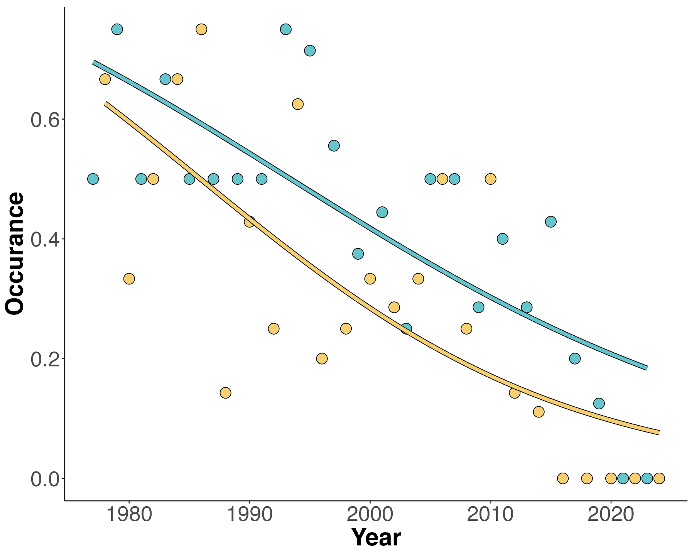

Multi-decadal changes in insect biodiversity from historical datasets
This is the first paragraph. It explains something interesting.

Multi-decadal changes in insect biodiversity from historical datasets
This is the first paragraph. It explains something interesting.
Resilience of montane butterflies to climate change
text
Conservation of butterflies in multifaceted landscapes
text